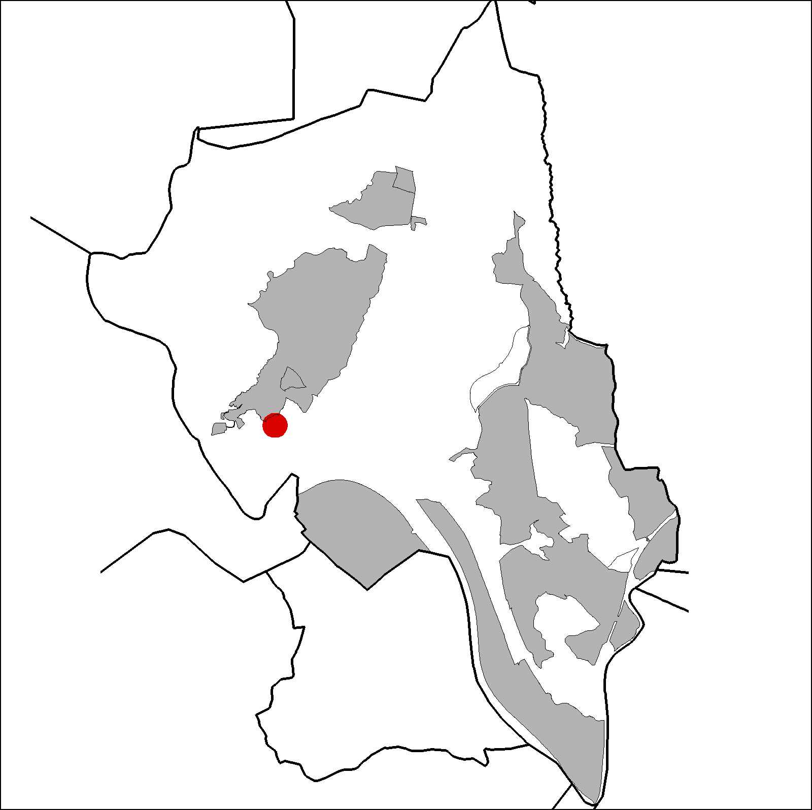
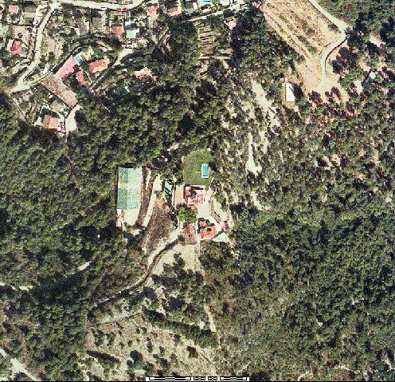

|  |  |
Nom de l’element: Can Colet
Clau d’identificació: B.1.16
Nucli o indret: arri Costablanca.
UTM: X= 412.293, Y= 4.592.423, 160 m snm.
Referència cadastral: Poligon 12, parcel·la 9503 i 9504 (000302100DF19A0001DG)
Règim del sòl: Sòl no urbanitzable.
1.1. Època de construcció i tipologia:
Conjunt format per una sèrie d’edificacions amb diferents volums, datats del 1950 aproximadament. La vivenda principal té planta baixa i planta pis. També hi ha una vivenda pels masovers d’igual alçada i una ermita d’una sola nau amb un absis de planta circular amb una arcada adovellada a l’entrada. L’edificació principal té diversos volums, com per exemple, una torre de planta baixa i dues plantes pis. Totes les edificacions tenen el mateix caire, amb murs blancs, cobertes de teula i galeries d’arc de mig punt. Hi ha peces de pedra amb motius heràldics.
1.2. Estat de conservació:
En general, bo. Les estructures portants, els forjats, les voltes, les cobertes, les obertures i els acabats interiors es troben en bon estat de conservació. Les façanes i el paviment es troben en un estat mitjà de conservació.
1.3. Ús actual:
abitatge de segona residència, masoveria i explotació ramadera de cavalls.
1.4. Accés:
Accés des del barri de la Costablanca, pel Passeig de la Masia.
Conjunt d’edificis del 1950, inclòs una ermita, envoltada de terreny forestal.
3.1. Usos admesos:
Habitatge rural (màxim 3 habitatges); residencial; hoteler (excepte aparthotel; i amb un màxim de 30 places); oficines i serveis; industria vinculada a productes del camp (industrial, categoria 1ª); educatiu; recreatiu cultural i social; recreatiu de restauració; esportiu.
3.2. Condicions d’ordenació:
Segons Pla Especial a redactar.
3.3. Accés i serveis:
Des del barri de la Costablanca, pel Passeig de la Masia.